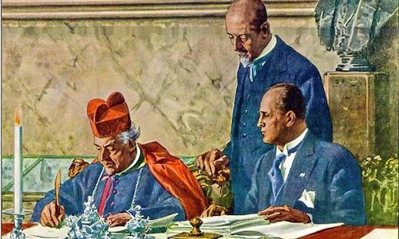
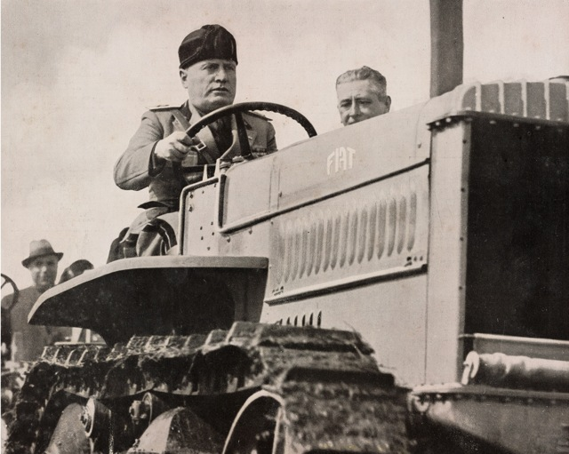
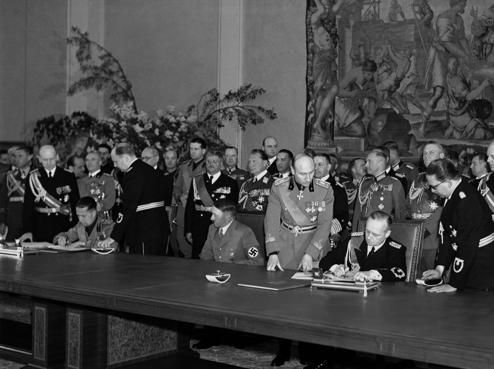

Il Ventennio Fascista
Tra i temi trattati quest'anno in storia, ho scelto di approfondire il regime fascista perché lo considero un passaggio fondamentale per comprendere l'Italia di oggi. Studiare questo periodo non significa solo analizzare il passato, ma sviluppare una coscienza critica verso i meccanismi di controllo del consenso, la perdita delle libertà democratiche e le tragiche conseguenze delle ideologie totalitarie, offrendo spunti di riflessione attuali anche sul valore dei diritti umani e della democrazia.
Il Regime Fascista di Mussolini
Il movimento fascista e l’avvento al potere
Il fascismo nacque in Italia nel 1919, quando Benito Mussolini fondò a Milano i Fasci di combattimento, sfruttando la crisi economica e sociale del primo dopoguerra (il Biennio Rosso). Attraverso lo squadrismo violento delle camicie nere, il movimento stroncò le proteste operaie e contadine ottenendo l'appoggio dei grandi proprietari terrieri. Nel 1921 si trasformò ufficialmente nel Partito Nazionale Fascista (PNF). Sfruttando la debolezza dello Stato liberale, Mussolini organizzò la Marcia su Roma il 28 ottobre 1922; il re Vittorio Emanuele III gli affidò l'incarico di formare il nuovo governo.

La costruzione del regime fascista
In seguito al successo elettorale del 1924 ottenuto sotto intimidazioni, il deputato socialista Giacomo Matteotti denunciò i brogli in Parlamento e venne per questo rapito e ucciso dagli squadristi. Superata la crisi politica, Mussolini avviò la dittatura a viso aperto. Tra il 1925 e il 1926 vennero emanate le Leggi Fascistissime, che sciolsero i partiti d'opposizione, abolirono la libertà di stampa e di sciopero, e istituirono l'OVRA (la polizia segreta). Per raccogliere il massimo consenso in un paese fortemente cattolico, il regime firmò l'11 febbraio 1929 i Patti Lateranensi con la Chiesa cattolica.

La politica economica del fascismo
Dopo una prima fase liberista, lo Stato passò a un forte protezionismo e intervento pubblico. Venne lanciata la "Battaglia del grano" per raggiungere l'autosufficienza agricola e fu imposta la rivalutazione della moneta a "Quota 90" rispetto alla sterlina. In seguito alla crisi globale del 1929, il regime fondò l'IRI per salvare le industrie strategiche e impose l'Autarchia (l'indipendenza economica totale dall'estero). Il sistema sindacale fu sostituito dal corporativismo, volto a vietare gli scioperi e obbligare capitalisti e lavoratori a collaborare sotto lo stretto controllo statale.

La politica estera fascista
Negli anni Trenta la politica estera italiana divenne fortemente aggressiva ed espansionistica. Nel 1935 l'Italia invase l'Etiopia, portando Mussolini a proclamare la nascita dell'Impero nel 1936, nonostante le sanzioni della Società delle Nazioni. Questo isolamento spinse il regime ad allearsi strettamente con la Germania nazista di Hitler, sancito dalla nascita dell'Asse Roma-Berlino (1936). Nel 1938 il regime emanò le infami Leggi Razziali contro i cittadini ebrei e, nel maggio 1939, firmò il Patto d'Acciaio, legando definitivamente il destino militare dell'Italia alla Germania alla vigilia della Seconda Guerra Mondiale.
